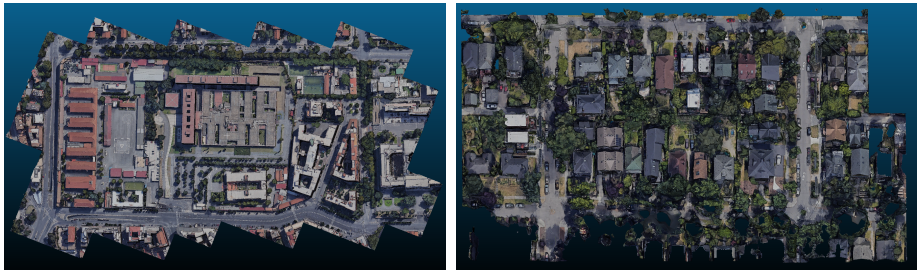
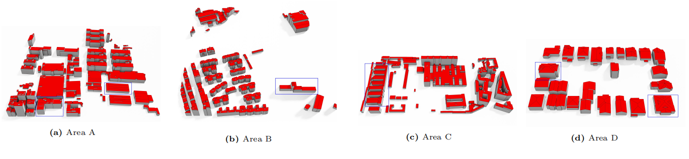
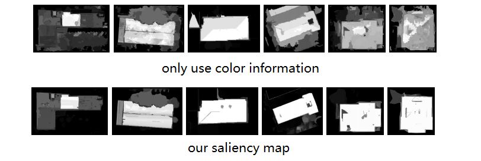

Efficient interactions for reconstructing complex buildings via joint photometric and geometric saliency segmentation
Bo Xu,(email) xubo@swjtu.edu.cn
Han Hu,(email) han.hu@swjtu.edu.cn
Qin Zhu*,(email) zhuq66@263.net
Yigao Jin,(email) yigaojin@my.swjtu.edu.cn
HaoJia Yu,(email) yhj@my.swjtu.edu.cn
Ruofei Zhong,(email) zrfsss@163.com
The VR-LAB
Faculty of Geosciences and Environmental Engineering
Southwest Jiaotong University
No. 111, North 1st Section, 2nd Ring Road Chengdu, Sichuan, China, 611756
Motivation
The reconstruction of level-of-detail 2 (LOD-2) buildings has drawn considerable attention over the past two decades. Since completely automatic reconstruction approaches still face many difficulties in industry solutions, efficient and robust interactive modeling tools are of huge demand. This paper proposes an interactive LOD-2 modeling approach that can generate boundary-precise and topology-correct building models efficiently from raw DSM and DOM data. The aim is to minimize the amount of interaction while maintaining the ability to deal with various roof types. Users only need very few and simple operators to generate the integral models, mostly several clicks on a 2D platform. The extraction of cell boundaries and the identification of cell types that often require human interaction in industry use are solved simultaneously. The models can then be built based on the constructive solid geometry and assembly of partial primitives into complex buildings. The cells are further enriched with several semantic key points, which are essential for inferring the primitives' shapes and positions. The order of the cells can be irrelevant, and the sketches and semantic key points do not necessarily be perfect. The relationships among the cells are established automatically and represented by a topology graph. Experimental results on tens of thousands of buildings from different data sources have demonstrated its effectiveness and robustness.
Main Ideas
This paper proposes a click-based interactive modeling system.
The functions of a simple click in the system are twofold:
1) it helps to extract the outlines of the cells via saliency segmentation on both orthophoto and the Digital Surface Model (DSM), and 2) it helps to identify both the type and parameters of the primitive of the corresponding cell when the point is enriched with semantic information, for example, ridge, boundary, or ground.
Specifically, the semantic key-point generated with only a single click is first used to separate the target cell as foreground and background using joint geometric and photometric saliency segmentation. Unifying the geometrical information in the DSM makes it possible to create necessary clues for segmentation. Then, for each cell, the semantic key points will help to infer not only the primitive type but also the model parameters in a model-driven manner. Because the boundary of the cell is not necessarily a rectangle, the basic primitive is also redefined to adapt to this flexibility. Third, the typologies between all cells are identified automatically based on a graph structure; thus, the proposed interactive system is also agnostic to the order of the creation of the cells, which is more flexible. Finally, the constructive solid geometry (CSG-based) approach is used to assemble all the connected cells with correct hierarchies. Therefore, the proposed approaches only require a single round of simple user interactions.
In summary, the contributions of the proposed methods are two-fold: 1) an efficient interaction strategy that unifies the extraction of cell outlines and a primitive model into a single click-based system and 2) a saliency segmentation approach that is aware of both geometric and photometric data for improved accuracy and reduced user strokes.
Experimental results
The experiments contain three data sets.
The first dataset shown in includes DSM and DOM data derived from stereo matching of aerial images, collected from the city Guangzhou, Guangdong Province, China. We used this dataset to test the real-time modeling of our tools.
The second dataset was generated by re-sampling the meshes crawled from the Google Map. One from the city of Rome, Italy, another from the city Los Angles, USA. We use this dataset to demonstrate our performance under various roof types and complex scenes.
The third dataset (areas E, F, and G) was collected from the city of Suzhou, Jiangsu province, China, which is the intermediate result collected by the real production department.
Since large areas with precise location are not allowed to be uploaded, only the second dataset is provided here: raw mesh and textures for Rome(left, size:20 M)
raw mesh and textures for Seattle(right, size:15 M)
The modeling results are provided below:  For the reconstruction resukts, area A is also provided in Kubity, which are re-scaled and shifted. You can see more details in the link below: Kubity link for the model of area ACompare of saliency map
One of our main contribution is to use both 2D and 3D information to enhance the performance in primitives extraction. The improvements can be easily found according to the saliency map: 